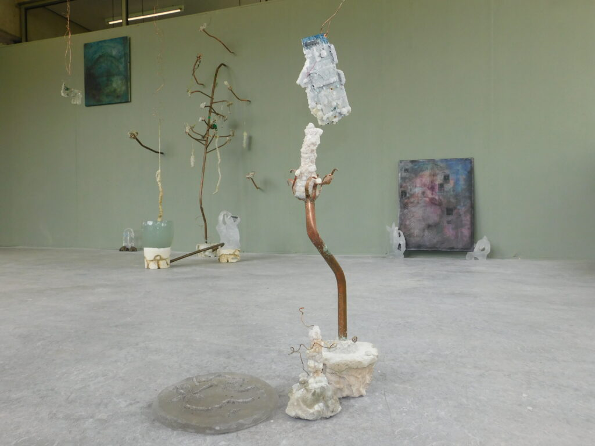

Data Crystal Garden
The Data Crystal Garden. GRA Graduation exhibit. 2024.
You are looking at a garden of data crystals. They have all processed “radical” data, been used for hacking or had Pegasus on them. Pegasus is an advanced surveillance bug used by many governments. In the ethereal landscapes of digital existence, memory takes on multifaceted forms, residing within the confines of hard drives and the transient spaces of RAM. Minerals, ancient and timeless, find new purpose as they crystallize around the computers' bodies — a reflection of the social and political fabric interwoven with our virtual interactions. In neo-spiritualism, crystals are often heralded as conductors of energy; if this is the case, my data crystal garden is growing red politics. As all the computer parts given to me by my community hold their red data, hard drives become vessels for ideologies, storing not just data but the resistance of their actions and research. However, as computers transcend their utilitarian origins, they ensnare us in a tech feudalism, monopolizing our lives. Yet, amidst this digital dominion, rebellion takes form—a defiance encapsulated in the freezing of memories within crystals, nature reclaims. Here, the computers used body grows as a relic of resistance, a testament to the struggle against ephemeral yet traceable dangers lurking. The digital landscape — my crystal garden where memory intertwines with activism, art, and magic, forging a new narrative of resistance in the age of technology. Here, within the crystalline depths of data, lies the essence of our digital existence; we cannot deny the physicality of our overlords.
Go a bit closer, put your ear to the wall and listen to the soundpiece. The sound piece is an epic poem in line with oral traditions; it tells the story of a hero who faces obstacles. The Pegasus is his opponent, alongside the people whose faces are captured by the screens. His thoughts and actions are engulfed and grow in this crystal garden, alongside other rebels..
Made from Copper, donated computers, radical data, silica crystals, Epsom, water, glass, willpower, poetry, community, wool, concrete, and zinc.
Installation of Variable size.